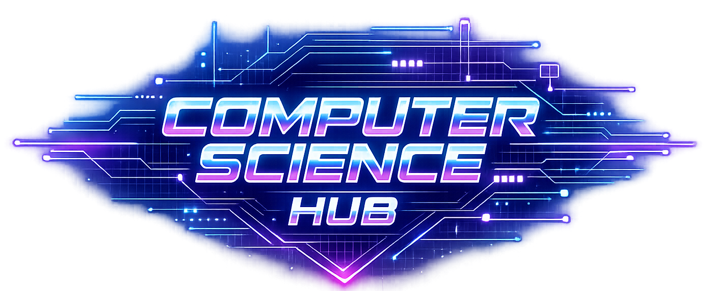

Clear explanations, revision notes, algorithms, pseudocode, and exam-style questions.
Sorting, searching, complexity, pseudocode, and walkthroughs.
Stacks, queues, trees, graphs, and implementation notes.
Variables, loops, OOP, recursion, and exam-ready explanations.
Protocols, topologies, security, and real-world examples.
CPU, memory, registers, fetch–decode–execute cycle.
Structured questions, mark schemes, and model answers.